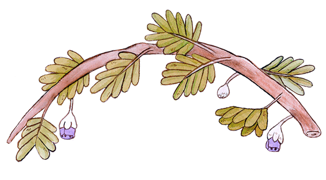

<div class="container">
  <div class="" style="background-color:rgba(67,54,48,0.1);">
    <div class="row">
      
      <h1 class="align-center">
        Flora y Fauna
      </h1>
      <h5 class="align-center">
        Principales ejemplares que puedes encontrar en tus visitas al bosque
      </h5>

      <species category="aves" list="birds_list"></species>
      <species category="vegetación" list="plants_list"></species>
      <species category="reptiles y antrópodos" list="reptiles_list"></species>

    </div>
  </div>
</div>
